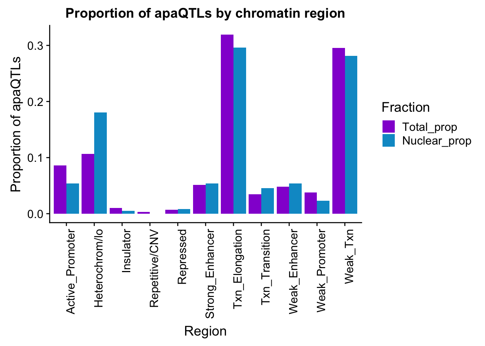
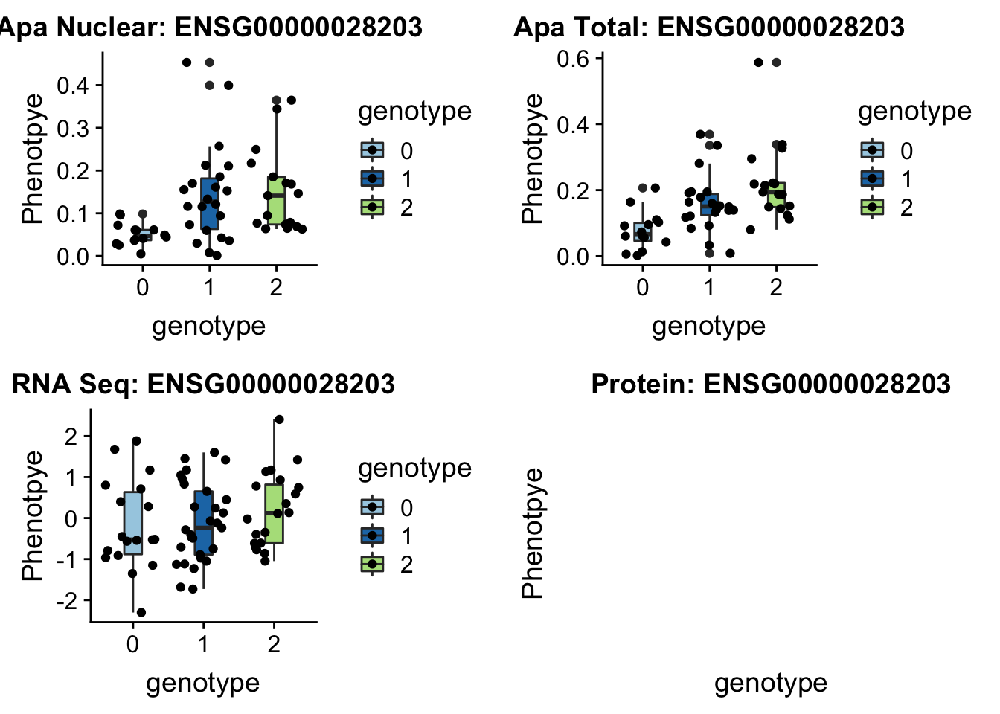

Characterize apaQTLs
Briana Mittleman
2/16/2019
Last updated: 2019-02-19
Checks: 6 0
Knit directory: threeprimeseq/analysis/
This reproducible R Markdown analysis was created with workflowr (version 1.2.0). The Report tab describes the reproducibility checks that were applied when the results were created. The Past versions tab lists the development history.
Great! Since the R Markdown file has been committed to the Git repository, you know the exact version of the code that produced these results.
Great job! The global environment was empty. Objects defined in the global environment can affect the analysis in your R Markdown file in unknown ways. For reproduciblity it’s best to always run the code in an empty environment.
The command set.seed(12345) was run prior to running the code in the R Markdown file. Setting a seed ensures that any results that rely on randomness, e.g. subsampling or permutations, are reproducible.
Great job! Recording the operating system, R version, and package versions is critical for reproducibility.
Nice! There were no cached chunks for this analysis, so you can be confident that you successfully produced the results during this run.
Great! You are using Git for version control. Tracking code development and connecting the code version to the results is critical for reproducibility. The version displayed above was the version of the Git repository at the time these results were generated.
Note that you need to be careful to ensure that all relevant files for the analysis have been committed to Git prior to generating the results (you can use wflow_publish or wflow_git_commit). workflowr only checks the R Markdown file, but you know if there are other scripts or data files that it depends on. Below is the status of the Git repository when the results were generated:
Ignored files:
Ignored: .DS_Store
Ignored: .Rhistory
Ignored: .Rproj.user/
Ignored: data/.DS_Store
Ignored: data/perm_QTL_trans_noMP_5percov/
Ignored: output/.DS_Store
Untracked files:
Untracked: KalistoAbundance18486.txt
Untracked: analysis/4suDataIGV.Rmd
Untracked: analysis/DirectionapaQTL.Rmd
Untracked: analysis/EvaleQTLs.Rmd
Untracked: analysis/YL_QTL_test.Rmd
Untracked: analysis/ncbiRefSeq_sm.sort.mRNA.bed
Untracked: analysis/snake.config.notes.Rmd
Untracked: analysis/verifyBAM.Rmd
Untracked: analysis/verifybam_dubs.Rmd
Untracked: code/PeaksToCoverPerReads.py
Untracked: code/strober_pc_pve_heatmap_func.R
Untracked: data/18486.genecov.txt
Untracked: data/APApeaksYL.total.inbrain.bed
Untracked: data/AllPeak_counts/
Untracked: data/ApaQTLs/
Untracked: data/ApaQTLs_otherPhen/
Untracked: data/ChromHmmOverlap/
Untracked: data/DistTXN2Peak_genelocAnno/
Untracked: data/GM12878.chromHMM.bed
Untracked: data/GM12878.chromHMM.txt
Untracked: data/LianoglouLCL/
Untracked: data/LocusZoom/
Untracked: data/LocusZoom_proc/
Untracked: data/NuclearApaQTLs.txt
Untracked: data/PeakCounts/
Untracked: data/PeakCounts_noMP_5perc/
Untracked: data/PeakCounts_noMP_genelocanno/
Untracked: data/PeakUsage/
Untracked: data/PeakUsage_noMP/
Untracked: data/PeakUsage_noMP_GeneLocAnno/
Untracked: data/PeaksUsed/
Untracked: data/PeaksUsed_noMP_5percCov/
Untracked: data/QTL_overlap/
Untracked: data/RNAkalisto/
Untracked: data/RefSeq_annotations/
Untracked: data/TotalApaQTLs.txt
Untracked: data/Totalpeaks_filtered_clean.bed
Untracked: data/UnderstandPeaksQC/
Untracked: data/WASP_STAT/
Untracked: data/YL-SP-18486-T-combined-genecov.txt
Untracked: data/YL-SP-18486-T_S9_R1_001-genecov.txt
Untracked: data/YL_QTL_test/
Untracked: data/apaExamp/
Untracked: data/apaExamp_proc/
Untracked: data/apaQTL_examp_noMP/
Untracked: data/bedgraph_peaks/
Untracked: data/bin200.5.T.nuccov.bed
Untracked: data/bin200.Anuccov.bed
Untracked: data/bin200.nuccov.bed
Untracked: data/clean_peaks/
Untracked: data/comb_map_stats.csv
Untracked: data/comb_map_stats.xlsx
Untracked: data/comb_map_stats_39ind.csv
Untracked: data/combined_reads_mapped_three_prime_seq.csv
Untracked: data/diff_iso_GeneLocAnno/
Untracked: data/diff_iso_proc/
Untracked: data/diff_iso_trans/
Untracked: data/ensemble_to_genename.txt
Untracked: data/example_gene_peakQuant/
Untracked: data/explainProtVar/
Untracked: data/filtPeakOppstrand_cov_noMP_GeneLocAnno_5perc/
Untracked: data/filtered_APApeaks_merged_allchrom_refseqTrans.closest2End.bed
Untracked: data/filtered_APApeaks_merged_allchrom_refseqTrans.closest2End.noties.bed
Untracked: data/first50lines_closest.txt
Untracked: data/gencov.test.csv
Untracked: data/gencov.test.txt
Untracked: data/gencov_zero.test.csv
Untracked: data/gencov_zero.test.txt
Untracked: data/gene_cov/
Untracked: data/joined
Untracked: data/leafcutter/
Untracked: data/merged_combined_YL-SP-threeprimeseq.bg
Untracked: data/molPheno_noMP/
Untracked: data/mol_overlap/
Untracked: data/mol_pheno/
Untracked: data/nom_QTL/
Untracked: data/nom_QTL_opp/
Untracked: data/nom_QTL_trans/
Untracked: data/nuc6up/
Untracked: data/nuc_10up/
Untracked: data/other_qtls/
Untracked: data/pQTL_otherphen/
Untracked: data/peakPerRefSeqGene/
Untracked: data/perm_QTL/
Untracked: data/perm_QTL_GeneLocAnno_noMP_5percov/
Untracked: data/perm_QTL_GeneLocAnno_noMP_5percov_3UTR/
Untracked: data/perm_QTL_diffWindow/
Untracked: data/perm_QTL_opp/
Untracked: data/perm_QTL_trans/
Untracked: data/perm_QTL_trans_filt/
Untracked: data/protAndAPAAndExplmRes.Rda
Untracked: data/protAndAPAlmRes.Rda
Untracked: data/protAndExpressionlmRes.Rda
Untracked: data/reads_mapped_three_prime_seq.csv
Untracked: data/smash.cov.results.bed
Untracked: data/smash.cov.results.csv
Untracked: data/smash.cov.results.txt
Untracked: data/smash_testregion/
Untracked: data/ssFC200.cov.bed
Untracked: data/temp.file1
Untracked: data/temp.file2
Untracked: data/temp.gencov.test.txt
Untracked: data/temp.gencov_zero.test.txt
Untracked: data/threePrimeSeqMetaData.csv
Untracked: data/threePrimeSeqMetaData55Ind.txt
Untracked: data/threePrimeSeqMetaData55Ind.xlsx
Untracked: data/threePrimeSeqMetaData55Ind_noDup.txt
Untracked: data/threePrimeSeqMetaData55Ind_noDup.xlsx
Untracked: data/threePrimeSeqMetaData55Ind_noDup_WASPMAP.txt
Untracked: data/threePrimeSeqMetaData55Ind_noDup_WASPMAP.xlsx
Untracked: output/deeptools_plots/
Untracked: output/picard/
Untracked: output/plots/
Untracked: output/qual.fig2.pdf
Unstaged changes:
Modified: analysis/28ind.peak.explore.Rmd
Modified: analysis/CompareLianoglouData.Rmd
Modified: analysis/NewPeakPostMP.Rmd
Modified: analysis/apaQTLoverlapGWAS.Rmd
Modified: analysis/cleanupdtseq.internalpriming.Rmd
Modified: analysis/coloc_apaQTLs_protQTLs.Rmd
Modified: analysis/dif.iso.usage.leafcutter.Rmd
Modified: analysis/diffIsoAnalysisNewMapping.Rmd
Modified: analysis/diff_iso_pipeline.Rmd
Modified: analysis/explainpQTLs.Rmd
Modified: analysis/explore.filters.Rmd
Modified: analysis/flash2mash.Rmd
Modified: analysis/mispriming_approach.Rmd
Modified: analysis/overlapMolQTL.Rmd
Modified: analysis/overlapMolQTL.opposite.Rmd
Modified: analysis/overlap_qtls.Rmd
Modified: analysis/peakOverlap_oppstrand.Rmd
Modified: analysis/peakQCPPlots.Rmd
Modified: analysis/pheno.leaf.comb.Rmd
Modified: analysis/pipeline_55Ind.Rmd
Modified: analysis/swarmPlots_QTLs.Rmd
Modified: analysis/test.max2.Rmd
Modified: analysis/test.smash.Rmd
Modified: analysis/understandPeaks.Rmd
Modified: code/Snakefile
Note that any generated files, e.g. HTML, png, CSS, etc., are not included in this status report because it is ok for generated content to have uncommitted changes.
These are the previous versions of the R Markdown and HTML files. If you’ve configured a remote Git repository (see ?wflow_git_remote), click on the hyperlinks in the table below to view them.
| File | Version | Author | Date | Message |
|---|---|---|---|---|
| Rmd | 9bc1a38 | Briana Mittleman | 2019-02-19 | add eif2a lz |
| html | a20b63c | Briana Mittleman | 2019-02-19 | Build site. |
| Rmd | bcce5df | Briana Mittleman | 2019-02-19 | add examples |
| html | ab45fe8 | Briana Mittleman | 2019-02-19 | Build site. |
| Rmd | 75085b4 | Briana Mittleman | 2019-02-19 | add example plots |
| html | 1dde5f9 | Briana Mittleman | 2019-02-19 | Build site. |
| html | 65b150e | Briana Mittleman | 2019-02-19 | Build site. |
| Rmd | a77fa79 | Briana Mittleman | 2019-02-19 | add eQTL pval for overlap |
| html | eea777a | Briana Mittleman | 2019-02-18 | Build site. |
| Rmd | 1b5032e | Briana Mittleman | 2019-02-18 | add chromHMM analysus |
| html | fe8c55b | Briana Mittleman | 2019-02-18 | Build site. |
| Rmd | 2d86d89 | Briana Mittleman | 2019-02-18 | add pi1 anaysis |
| html | beb0d71 | Briana Mittleman | 2019-02-18 | Build site. |
| Rmd | 3c1f049 | Briana Mittleman | 2019-02-18 | add gwas overlap |
library(workflowr)This is workflowr version 1.2.0
Run ?workflowr for help getting startedlibrary(tidyverse)── Attaching packages ──────────────────────────────────────────────────────────────────────────── tidyverse 1.2.1 ──✔ ggplot2 3.0.0 ✔ purrr 0.2.5
✔ tibble 1.4.2 ✔ dplyr 0.7.6
✔ tidyr 0.8.1 ✔ stringr 1.4.0
✔ readr 1.1.1 ✔ forcats 0.3.0Warning: package 'stringr' was built under R version 3.5.2── Conflicts ─────────────────────────────────────────────────────────────────────────────── tidyverse_conflicts() ──
✖ dplyr::filter() masks stats::filter()
✖ dplyr::lag() masks stats::lag()library(qvalue)
library(reshape2)
Attaching package: 'reshape2'The following object is masked from 'package:tidyr':
smithslibrary(cowplot)
Attaching package: 'cowplot'The following object is masked from 'package:ggplot2':
ggsaveIn this analysis I will look at the apaQTLs to draw biological insight. To do this I will run the following analysis:
Look at chromatin regions for QTLs (chromHMM)
Overlap apaQTLs between fractions
Overlap apaQTLs with GWAS
QTL examples
Chromatin regions for QTLs
This will start with the sig QTL bed files:
/project2/gilad/briana/threeprimeseq/data/ApaQTLs/Nuclear.apaQTLs.sort.bed
/project2/gilad/briana/threeprimeseq/data/ApaQTLs/Total.apaQTLs.sort.bed
Creare a python script using pybedtools:
ChromHMM.QTLs.py
import pybedtools
sigNuc=pybedtools.BedTool('/project2/gilad/briana/threeprimeseq/data/ApaQTLs/Nuclear.apaQTLs.sort.bed')
sigTot=pybedtools.BedTool('/project2/gilad/briana/threeprimeseq/data/ApaQTLs/Total.apaQTLs.sort.bed')
hmm=pybedtools.BedTool("/project2/gilad/briana/genome_anotation_data/GM12878.chromHMM.sort.bed")
#map hmm to snps
Tot_overlapHMM=sigTot.map(hmm, c=4)
Nuc_overlapHMM=sigNuc.map(hmm,c=4)
#save results
Tot_overlapHMM.saveas("/project2/gilad/briana/threeprimeseq/data/ApaQTLs/Tot_overlapHMM.bed")
Nuc_overlapHMM.saveas("/project2/gilad/briana/threeprimeseq/data/ApaQTLs/Nuc_overlapHMM.bed")Run in three-prime-env
chromHmm=read.table("../data/ChromHmmOverlap/chromHMM_regions.txt", col.names = c("number", "name"), stringsAsFactors = F)
TotalOverlapHMM=read.table("../data/ApaQTLs/Tot_overlapHMM.bed", col.names=c("chrom", "start", "end", "pid", "significance", "strand", "number"))
TotalOverlapHMM_names=TotalOverlapHMM %>% left_join(chromHmm, by="number")
NuclearOverlapHMM=read.table("../data/ApaQTLs/Nuc_overlapHMM.bed", col.names=c("chrom", "start", "end", "pid", "significance", "strand", "number"))
NuclearOverlapHMM_names=NuclearOverlapHMM %>% left_join(chromHmm, by="number")
ggplot(TotalOverlapHMM_names, aes(x=name)) + geom_bar() + labs(title="ChromHMM labels for Total APAQtls" , y="Number of SNPs", x="Region")+theme(axis.text.x = element_text(angle = 90, hjust = 1))
ggplot(NuclearOverlapHMM_names, aes(x=name)) + geom_bar() + labs(title="ChromHMM labels for Nuclear APAQtls" , y="Number of SNPs", x="Region")+theme(axis.text.x = element_text(angle = 90, hjust = 1))
Group them to put on plot together
NuclearOverlapHMM_names_byname= NuclearOverlapHMM_names %>% group_by(name) %>% summarise(Nuclear=n())
TotalOverlapHMM_names_byname= TotalOverlapHMM_names %>% group_by(name) %>% summarise(Total=n())
bothFracHMM= TotalOverlapHMM_names_byname %>% full_join(NuclearOverlapHMM_names_byname, by="name")
bothFracHMM$Nuclear= bothFracHMM$Nuclear %>% replace_na(0)melt and plot
bothFracHMM_melt= melt(bothFracHMM,id.vars="name")
colnames(bothFracHMM_melt)=c("Region", "Fraction", "NQTLs")
apaQTLsChromregion=ggplot(bothFracHMM_melt, aes(x=Region, y=NQTLs, by=Fraction, fill=Fraction)) + geom_bar(stat="identity", position = "dodge")+ theme(axis.text.x = element_text(angle = 90, hjust = 1)) +scale_fill_manual(values=c("darkviolet","deepskyblue3")) + labs(title="apaQTLs by chromatin region")
apaQTLsChromregion
ggsave(apaQTLsChromregion, file="../output/plots/apaQTLsbyChromHMM.png", width = 7, height = 5)bothFracHMM_prop= bothFracHMM %>% mutate(Total_prop=Total/291) %>% mutate(Nuclear_prop=Nuclear/615) %>% select(-Total,-Nuclear)
bothFracHMM_prop_melt= melt(bothFracHMM_prop,id.vars="name")
colnames(bothFracHMM_prop_melt)=c("Region", "Fraction", "PropQTLs")
propapaQTLsChromregion=ggplot(bothFracHMM_prop_melt, aes(x=Region, y=PropQTLs, by=Fraction, fill=Fraction)) + geom_bar(stat="identity", position = "dodge")+ theme(axis.text.x = element_text(angle = 90, hjust = 1)) +scale_fill_manual(values=c("darkviolet","deepskyblue3")) + labs(y="Proportion of apaQTLs", title="Proportion of apaQTLs by chromatin region")
propapaQTLsChromregion
ggsave(propapaQTLsChromregion, file="../output/plots/proportionapaQTLsbyChromHMM.png", width = 7, height = 5)I will need to get matched snps to look for enrichment in these values.
Overlap apaQTLs between fractions.
Goal: Find the nominal pvalue for the significant snp peak pair in oposite fraction. I can make a dictionary with the total and nuclear QTLs then run through the nominal files to get the pvalues:
Start with apa QTLs:
/project2/gilad/briana/threeprimeseq/data/ApaQTLs/Nuclear.apaQTLs.sort.bed
/project2/gilad/briana/threeprimeseq/data/ApaQTLs/Total.apaQTLs.sort.bed
NomResFromOppFrac.py
nucQTLs="/project2/gilad/briana/threeprimeseq/data/ApaQTLs/Nuclear.apaQTLs.sort.bed"
totQTLs="/project2/gilad/briana/threeprimeseq/data/ApaQTLs/Total.apaQTLs.sort.bed"
nucNom="/project2/gilad/briana/threeprimeseq/data/nominal_APAqtl_GeneLocAnno_noMP_5percUs/filtered_APApeaks_merged_allchrom_refseqGenes.GeneLocAnno_NoMP_sm_quant.Nuclear.fixed.pheno_5perc.fc.gz.qqnorm_allNomRes.txt"
totNom="/project2/gilad/briana/threeprimeseq/data/nominal_APAqtl_GeneLocAnno_noMP_5percUs/filtered_APApeaks_merged_allchrom_refseqGenes.GeneLocAnno_NoMP_sm_quant.Total.fixed.pheno_5perc.fc.gz.qqnorm_allNomRes.txt"
outnuc="/project2/gilad/briana/threeprimeseq/data/QTL_Overlap/TotQTLs_inNucFractionRes.txt"
outtot="/project2/gilad/briana/threeprimeseq/data/QTL_Overlap/NucQTLs_inTotFractionRes.txt"
def oppFract(inRes, inQTL, out):
fout=open(out, "w")
qtl_dic={}
#SNP is key, peak is value
for ln in open(inQTL,"r"):
snp=ln.split()[2]
chrom=ln.split()[0]
peak=ln.split()[3].split(":")[0]
qtl=str(chrom) + ":" + str(snp)
if qtl not in qtl_dic.keys():
qtl_dic[qtl]=[peak]
else:
qtl_dic[qtl].append(peak)
#print(qtl_dic)
for ln in open(inRes, "r"):
pval=ln.split()[3]
snp=ln.split()[1]
peak=ln.split()[0].split(":")[3].split("_")[-1]
if snp in qtl_dic.keys():
if peak in qtl_dic[snp]:
fout.write("%s\t%s\t%s\n"%(snp, peak, pval))
fout.close()
oppFract(nucNom, totQTLs,outnuc)
oppFract(totNom, nucQTLs, outtot)
Run in bash: run_NomResFromOppFrac.sh
#!/bin/bash
#SBATCH --job-name=NomResFromOppFrac
#SBATCH --account=pi-yangili1
#SBATCH --time=36:00:00
#SBATCH --output=NomResFromOppFrac.out
#SBATCH --error=NomResFromOppFrac.err
#SBATCH --partition=broadwl
#SBATCH --mem=30G
#SBATCH --mail-type=END
module load Anaconda3
source activate three-prime-env
python NomResFromOppFrac.pynames=c("SNP", "peak", "pval")
NucQTLinTot=read.table("../data/QTL_overlap/NucQTLs_inTotFractionRes.txt", stringsAsFactors = F, col.names = names)
TotQTLinNuc=read.table("../data/QTL_overlap/TotQTLs_inNucFractionRes.txt", stringsAsFactors = F, col.names = names)Get pi values:
qvalTot= pi0est(NucQTLinTot$pval, pi0.method = "bootstrap")
1-qvalTot$pi0[1] 0.8424242qvalNuc= pi0est(TotQTLinNuc$pval, pi0.method = "bootstrap")
1-qvalNuc$pi0[1] 0.9197861plots:
par(mfrow=c(1,2))
hist(NucQTLinTot$pval,xlab="Total apaQTL pvalue", main="Nuclear apaQTLs \nin Total Fraction")
text(.6,200, paste("pi_1=", round((1-qvalTot$pi0), digit=3), sep=" "))
hist(TotQTLinNuc$pval,xlab="Nuclear apaQTL pvalue", main="Total apaQTLs \nin Nuclear Fraction")
text(.6,125, paste("pi_1=", round((1-qvalNuc$pi0), digit=3), sep=" "))
| Version | Author | Date |
|---|---|---|
| eea777a | Briana Mittleman | 2019-02-18 |
png("../output/plots/apaFractionOverlapPi1.png", width=1000, height = 500)
par(mfrow=c(1,2))
hist(NucQTLinTot$pval,xlab="Total apaQTL pvalue", main="Nuclear apaQTLs \nin Total Fraction")
text(.6,200, paste("pi_1=", round((1-qvalTot$pi0), digit=3), sep=" "))
hist(TotQTLinNuc$pval,xlab="Nuclear apaQTL pvalue", main="Total apaQTLs \nin Nuclear Fraction")
text(.6,125, paste("pi_1=", round((1-qvalNuc$pi0), digit=3), sep=" "))
dev.off()quartz_off_screen
2 This provides evidence for high degree of QTL sharing with increased sharing total to nuclear. This demonstrates to me that there are nuclear QTLs that do not persist in the total fraction. I will want to learn more about these.
Overlap with GWAS catelog
I did this analysis with the QTLs in the preprocessed 39 individual analysis. I will follow a similar pipeline here. I will find all of the snps in LD with the QTLs then test for these in the GWAS catelog. The pipeline I used to get the LD for all of the snp is shown here. The plink files are in /project2/gilad/briana/threeprimeseq/data/GWAS_overlap/. There are both map and ped files.
I can now adapt the subset_plink4QTLs.py file to take the current QTLs list. The file just has the QTLs with the chromosome and position. I can make this and put it in:
/project2/gilad/briana/threeprimeseq/data/GWAS_overlap_processed
The 50mb QTLs are in /project2/gilad/briana/threeprimeseq/data/ApaQTLs.
- NuclearapaQTLs.GeneLocAnno.noMP.5perc.10FDR.txt
- TotalapaQTLs.GeneLocAnno.noMP.5perc.10FDR.txt
The QTL snps are in the 6th column.
cut -f6 -d" " /project2/gilad/briana/threeprimeseq/data/ApaQTLs/NuclearapaQTLs.GeneLocAnno.noMP.5perc.10FDR.txt | uniq > /project2/gilad/briana/threeprimeseq/data/ApaQTLs/NuclearQTLs_uniq_50mb.txt
cut -f6 -d" " /project2/gilad/briana/threeprimeseq/data/ApaQTLs/TotalapaQTLs.GeneLocAnno.noMP.5perc.10FDR.txt | uniq > /project2/gilad/briana/threeprimeseq/data/ApaQTLs/TotalQTLs_uniq_50mb.txtI can convert these the the way they are in GEU snp files tony made (snp_num_pos)
QTLs2GeuSnps_proc.py
tot_in=open("/project2/gilad/briana/threeprimeseq/data/ApaQTLs/TotalQTLs_uniq_50mb.txt", "r")
nuc_in=open("/project2/gilad/briana/threeprimeseq/data/ApaQTLs/NuclearQTLs_uniq_50mb.txt", "r")
tot_out=open("/project2/gilad/briana/threeprimeseq/data/ApaQTLs/TotalQTLs_uniq_50mb_GEU.txt", "w")
nuc_out=open("/project2/gilad/briana/threeprimeseq/data/ApaQTLs/NuclearQTLs_uniq_50mb_GEU.txt", "w")
def fix_file(fin, fout):
for ln in fin:
chrom, pos = ln.split(":")
fout.write("snp_%s_%s"%(chrom,pos))
fout.close()
fix_file(tot_in, tot_out)
fix_file(nuc_in, nuc_out)subset_plink4QTLs_proc.py
def main(genFile, qtlFile, outFile):
#convert snp file to a list:
def file_to_list(file):
snp_list=[]
for ln in file:
snp=ln.strip()
snp_list.append(snp)
return(snp_list)
gen=open(genFile,"r")
fout=open(outFile, "w")
qtls=open(qtlFile, "r")
qtl_list=file_to_list(qtls)
for ln in gen:
snp=ln.split()[2]
if snp in qtl_list:
fout.write(ln)
fout.close()
if __name__ == "__main__":
import sys
chrom=sys.argv[1]
fraction=sys.argv[2]
genFile = "/project2/gilad/briana/threeprimeseq/data/GWAS_overlap/geu_plinkYRI_LDchr%s.ld"%(chrom)
outFile= "/project2/gilad/briana/threeprimeseq/data/GWAS_overlap_processed/%sApaQTL_LD/chr%s.%sQTL.LD.geno.ld"%(fraction,chrom,fraction)
qtlFile= "/project2/gilad/briana/threeprimeseq/data/ApaQTLs/%sQTLs_uniq_50mb_GEU.txt"%(fraction)
main(genFile, qtlFile, outFile) run_subset_plink4QTLs_proc.sh
#!/bin/bash
#SBATCH --job-name= run_subset_plink4QTLs_proc
#SBATCH --account=pi-yangili1
#SBATCH --time=36:00:00
#SBATCH --output=run_subset_plink4QTLs_proc.out
#SBATCH --error=run_subset_plink4QTLs_proc.err
#SBATCH --partition=broadwl
#SBATCH --mem=30G
#SBATCH --mail-type=END
module load Anaconda3
source activate three-prime-env
for i in {1..22};
do
python subset_plink4QTLs_proc.py ${i} "Total"
done
for i in {1..22};
do
python subset_plink4QTLs_proc.py ${i} "Nuclear"
doneThis added 2446 total snps and 6258 nuclear snps.
Cat and remove indels:
cat chr* > allChr.TotalQTL.LD.gene.ld
grep -v indel allChr.TotalQTL.LD.gene.ld > allChr.TotalQTL.LD.gene.ld_noIndel
cat chr* > allChr.NuclearQTL.LD.gene.ld
grep -v indel allChr.NuclearQTL.LD.gene.ld > allChr.NuclearQTL.LD.gene.ld_noIndelMake these bed files:
makeAlloverlapbed_proc.py
#load files:
QTL_total=open("/project2/gilad/briana/threeprimeseq/data/ApaQTLs/TotalQTLs_uniq_50mb_GEU.txt", "r")
QTL_nuclear=open("/project2/gilad/briana/threeprimeseq/data/ApaQTLs/NuclearQTLs_uniq_50mb_GEU.txt", "r")
LD_total=open("/project2/gilad/briana/threeprimeseq/data/GWAS_overlap_processed/TotalApaQTL_LD/allChr.TotalQTL.LD.gene.ld_noIndel", "r")
LD_nuclear=open("/project2/gilad/briana/threeprimeseq/data/GWAS_overlap_processed/NuclearApaQTL_LD/allChr.NuclearQTL.LD.gene.ld_noIndel", "r")
outFile= open("/project2/gilad/briana/threeprimeseq/data/GWAS_overlap_processed/AllOverlapSnps.bed", "w")
#function for qtl to bed format
def qtl2bed(fqtl, fraction, fout=outFile):
for ln in fqtl:
snp, chrom, pos = ln.split("_")
start=int(pos)-1
end= int(pos)
fout.write("%s\t%d\t%d\tQTL_%s\n"%(chrom, start, end,fraction))
#function for ld to bed format
def ld2bed(fLD, fraction, fout=outFile):
for ln in fLD:
snpID=ln.split()[5]
snp, chrom, pos= snpID.split("_")
start=int(pos)-1
end=int(pos)
fout.write("%s\t%d\t%d\tLD_%s\n"%(chrom, start, end,fraction))
#I will run each of these for both fractions to get all of the snps in the out file.
qtl2bed(QTL_nuclear, "Nuclear")
qtl2bed(QTL_total, "Total")
ld2bed(LD_nuclear, "Nuclear")
ld2bed(LD_total, "Total")
outFile.close()Sort this:
sort -k1,1 -k2,2n /project2/gilad/briana/threeprimeseq/data/GWAS_overlap_processed/AllOverlapSnps.bed > /project2/gilad/briana/threeprimeseq/data/GWAS_overlap_processed/AllOverlapSnps.sort.bedOverlap with GWAS
I can use the overlapSNPsGWAS.py file I created in the previous rendition of this analysis but run it with these files.
run_overlapSNPsGWAS_proc.sh
#!/bin/bash
#SBATCH --job-name=run_overlapSNPsGWAS_proc
#SBATCH --account=pi-yangili1
#SBATCH --time=5:00:00
#SBATCH --output=run_overlapSNPsGWAS_proc.out
#SBATCH --error=run_overlapSNPsGWAS_proc.err
#SBATCH --partition=broadwl
#SBATCH --mem=10G
#SBATCH --mail-type=END
module load Anaconda3
source activate three-prime-env
python overlapSNPsGWAS.py "/project2/gilad/briana/threeprimeseq/data/GWAS_overlap_processed/AllOverlapSnps.sort.bed" "/project2/gilad/briana/threeprimeseq/data/GWAS_overlap_processed/AllSnps_GWASoverlapped.txt"Total QTLs overlap: rs3117582 6:31620520
Total LD overlap:
- rs2282301 1:155868625
- rs3596 12:95696420
- rs2277862 20:34152782
- rs2517713 6:29918099
Nuclear QTL overlap:
rs7206971 17:45425115
Nucelar LD overlapL
- rs10889353 1:63118196
- rs2282301 1:155868625
- rs10859871 12:95711876
- rs10133111 14:103377321
- rs17382723 2:242053546
- rs2277862 20:34152782
- rs2298428 22:21982892
- rs13160562 5:96111371
- rs29784 5:172595308
- rs2517713 6:29918099
- rs3077 6:33033022
Are these eQTLs?
Pull these snps from the eQTLs nominal pvalues:
Process the AllSnps_GWASoverlapped.txt file to have the RS id, the snp, and where it was found.
formatGWASOverlap.py
inFile="/project2/gilad/briana/threeprimeseq/data/GWAS_overlap_processed/AllSnps_GWASoverlapped.txt"
outFile=open("/project2/gilad/briana/threeprimeseq/data/GWAS_overlap_processed/AllSnps_GWASoverlapped_format.txt","w")
for i in open(inFile, "r"):
chrom=i.split()[0]
loc=i.split()[2]
snp=chrom + ":" + loc
found=i.split()[3]
rs=i.split()[7].split(":")[0]
outFile.write("%s\t%s\t%s\n"%(snp, rs, found))
outFile.close()
This is 14 uniq snps.
/project2/gilad/briana/threeprimeseq/data/molecular_QTLs/nom/fastqtl_qqnorm_RNAseq_phase2.fixed.nominal.out
I need to go throguh this file and check for the snps. I can do this by making a dictionary of the uniq snps in the overlap then testing the lines ib the nominal file. I want to keep the gene, snp, and pvalue for these associations
getexpPvalOverlap.py
overlapSnps="/project2/gilad/briana/threeprimeseq/data/GWAS_overlap_processed/AllSnps_GWASoverlapped_format.txt"
outF=open("/project2/gilad/briana/threeprimeseq/data/GWAS_overlap_processed/eQTL_pval_GWASOverlap.txt","w")
nomRes="/project2/gilad/briana/threeprimeseq/data/molecular_QTLs/nom/fastqtl_qqnorm_RNAseq_phase2.fixed.nominal.out"
snps_dic={}
for ln in open(overlapSnps, "r"):
snp=ln.split()[0]
if snp not in snps_dic.keys():
snps_dic[snp]=""
for ln in open(nomRes,"r"):
snp=ln.split()[1]
if snp in snps_dic.keys():
gene=ln.split()[0].split(".")[0]
pval=ln.split()[3]
outF.write("%s\t%s\t%s\n"%(snp,gene,pval))
outF.close()I can pull this in and get the lowest pval for each one
eQTLpvalOverlapGWAS=read.table("../data/ApaQTLs/eQTL_pval_GWASOverlap.txt", stringsAsFactors = F, col.names = c("snp", "gene", "pval"))eQTLpvalOverlapGWAS_min= eQTLpvalOverlapGWAS %>% group_by(snp) %>% summarise(pvalM=min(pval)) %>% mutate(noSig=ifelse(pvalM<.05, "yes", "no"))FIlter by the non sig ones to look at as exmaples:
eQTLpvalOverlapGWAS_NotSig= eQTLpvalOverlapGWAS_min %>% filter(noSig=="no")
eQTLpvalOverlapGWAS_NotSig# A tibble: 5 x 3
snp pvalM noSig
<chr> <dbl> <chr>
1 1:63118196 0.400 no
2 12:95696420 0.0813 no
3 12:95711876 0.0813 no
4 2:242053546 0.0878 no
5 5:172595308 0.0530 no 1:63118196 in LD with nuclear QTL (find which it is LD with )
grep snp_1_63118196 chr1.NuclearQTL.LD.geno.ld
#snp_1_63018852
#r2 .91
12:95696420 LD with total QTL
grep snp_12_95696420 TotalApaQTL_LD/chr12.TotalQTL.LD.geno.ld
#snp_12_95672642
#r2 =1
12:95711876 LD_Nuclear
grep snp_12_95711876 NuclearApaQTL_LD/chr12.NuclearQTL.LD.geno.ld
#snp_12_95688540
#r2 =1 2:242053546 LD_Nuclear
grep snp_2_242053546 NuclearApaQTL_LD/chr2.NuclearQTL.LD.geno.ld
#snp_2_242018994
#r2 = .94 5:172595308 LD Nuclear
grep snp_5_172595308 NuclearApaQTL_LD/chr5.NuclearQTL.LD.geno.ld
#snp_5_172580291
#r2 = .938 Exampls plots:
In this analysis file I made boxplots for example QTLs. Here I can look at these.
1:63018852
First example 1:63018852 (nuclear QTL) DOCK7 peak5329 (2 GWAS hits for this snp and gene)
grep DOCK7 /project2/gilad/briana/genome_anotation_data/ensemble_to_genename.txt
#ENSG00000116641 createQTLsnpAPAPhenTable_proc.py
def main(PhenFile, GenFile, outFile, snp, peak):
fout=open(outFile, "w")
#Phen=open(PhenFile, "r")
Gen=open(GenFile, "r")
#get ind and pheno info
def get_pheno():
Phen=open(PhenFile, "r")
for num, ln in enumerate(Phen):
if num == 0:
indiv= ln.split()[4:]
else:
id=ln.split()[3].split(":")[3]
peakID=id.split("_")[2]
if peakID == peak:
pheno_list=ln.split()[4:]
pheno_data=list(zip(indiv,pheno_list))
#print(pheno_data)
return(pheno_data)
def get_geno():
for num, lnG in enumerate(Gen):
if num == 13:
Ind_geno=lnG.split()[9:]
if num >= 14:
sid= lnG.split()[2]
if sid == snp:
gen_list=lnG.split()[9:]
allele1=[]
allele2=[]
for i in gen_list:
genotype=i.split(":")[0]
allele1.append(genotype.split("|")[0])
allele2.append(genotype.split("|")[1])
#now i have my indiv., phen, allele 1, alle 2
geno_data=list(zip(Ind_geno, allele1, allele2))
#print(geno_data)
return(geno_data)
phenotype=get_pheno()
pheno_df=pd.DataFrame(data=phenotype,columns=["Ind", "Pheno"])
#print(pheno_df)
genotype=get_geno()
geno_df=pd.DataFrame(data=genotype, columns=["Ind", "Allele1", "Allele2"])
#print(geno_df)
full_df=pd.merge(geno_df, pheno_df, how="inner", on="Ind")
full_df.to_csv(fout, sep="\t", encoding='utf-8', index=False)
fout.close()
if __name__ == "__main__":
import sys
import pandas as pd
chrom=sys.argv[1]
snp = sys.argv[2]
peak = sys.argv[3]
fraction=sys.argv[4]
PhenFile = "/project2/gilad/briana/threeprimeseq/data/phenotypes_filtPeakTranscript_noMP_GeneLocAnno_5percUs/filtered_APApeaks_merged_allchrom_refseqGenes.GeneLocAnno_NoMP_sm_quant.%s.fixed.pheno_5perc.fc.gz.phen_chr%s"%(fraction, chrom)
GenFile= "/project2/gilad/briana/YRI_geno_hg19/chr%s.dose.filt.vcf"%(chrom)
outFile = "/project2/gilad/briana/threeprimeseq/data/ApaQTL_proc_examples/qtlSNP_PeakAPA%s.%s%s.txt"%(fraction, snp, peak)
main(PhenFile, GenFile, outFile, snp, peak)createQTLsnpMolPhenTable.py changed the output dir
python createQTLsnpAPAPhenTable_proc.py 1 1:63018852 peak5329 Total
python createQTLsnpAPAPhenTable_proc.py 1 1:63018852 peak5329 Nuclear
sbatch run_createQTLsnpMolPhenTable.sh "1" "1:63018852" "ENSG00000116641"
Function to make plots:
plotQTL_func= function(SNP, peak, gene){
apaN_file=read.table(paste("../data/apaExamp_proc/qtlSNP_PeakAPANuclear.", SNP, peak, ".txt", sep = "" ), header=T)
apaT_file=read.table(paste("../data/apaExamp_proc/qtlSNP_PeakAPATotal.", SNP, peak, ".txt", sep = "" ), header=T)
su30_file=read.table(paste("../data/apaExamp_proc/qtlSNP_Peak_4su_30_", SNP, gene, ".txt", sep=""), header = T)
su60_file=read.table(paste("../data/apaExamp_proc/qtlSNP_Peak_4su_60_", SNP, gene, ".txt", sep=""), header=T)
RNA_file=read.table(paste("../data/apaExamp_proc/qtlSNP_Peak_RNAseq_", SNP, gene, ".txt", sep=""),header=T)
RNAg_file=read.table(paste("../data/apaExamp_proc/qtlSNP_Peak_RNAseqGeuvadis_", SNP, gene, ".txt", sep=""), header = T)
ribo_file=read.table(paste("../data/apaExamp_proc/qtlSNP_Peak_ribo_", SNP, gene, ".txt", sep=""),header=T)
prot_file=read.table(paste("../data/apaExamp_proc/qtlSNP_Peak_prot.", SNP, gene, ".txt", sep=""), header=T)
ggplot_func= function(file, molPhen,GENE){
file = file %>% mutate(genotype=Allele1 + Allele2)
file$genotype= as.factor(as.character(file$genotype))
plot=ggplot(file, aes(y=Pheno, x=genotype, by=genotype, fill=genotype)) + geom_boxplot(width=.25) + geom_jitter() + labs(y="Phenotpye",title=paste(molPhen, GENE, sep=": ")) + scale_fill_brewer(palette="Paired")
return(plot)
}
apaNplot=ggplot_func(apaN_file, "Apa Nuclear", gene)
apaTplot=ggplot_func(apaT_file, "Apa Total", gene)
su30plot=ggplot_func(su30_file, "4su30",gene)
su60plot=ggplot_func(su60_file, "4su60",gene)
RNAplot=ggplot_func(RNA_file, "RNA Seq",gene)
RNAgPlot=ggplot_func(RNAg_file, "RNA Seq Geuvadis",gene)
riboPlot= ggplot_func(ribo_file, "Ribo Seq",gene)
protplot=ggplot_func(prot_file, "Protein",gene)
full_plot= plot_grid(apaNplot,apaTplot, RNAplot, protplot,nrow=2)
return (full_plot)
}DOC7_boxplots=plotQTL_func(SNP="1:63018852", peak="peak5329", gene="ENSG00000116641")
DOC7_boxplots
ggsave(DOC7_boxplots, file="../output/plots/DOC7_boxplots.png")Saving 7 x 5 in imageOnly ApaPlot:
plotAPAQTL_func= function(SNP, peak, gene){
apaN_file=read.table(paste("../data/apaExamp_proc/qtlSNP_PeakAPANuclear.", SNP, peak, ".txt", sep = "" ), header=T)
apaT_file=read.table(paste("../data/apaExamp_proc/qtlSNP_PeakAPATotal.", SNP, peak, ".txt", sep = "" ), header=T)
ggplot_func= function(file, molPhen,GENE){
file = file %>% mutate(genotype=Allele1 + Allele2)
file$genotype= as.factor(as.character(file$genotype))
plot=ggplot(file, aes(y=Pheno, x=genotype, by=genotype, fill=genotype)) + geom_boxplot(width=.25) + geom_jitter() + labs(y="Phenotpye",title=paste(molPhen, GENE, sep=": ")) + scale_fill_brewer(palette="Paired")
return(plot)
}
apaNplot=ggplot_func(apaN_file, "Apa Nuclear", gene)
apaTplot=ggplot_func(apaT_file, "Apa Total", gene)
full_plot= plot_grid(apaNplot,apaTplot,nrow=1)
return (full_plot)
}plotAPAQTL_func(SNP="1:63018852", peak="peak5329", gene="DOCK7")
| Version | Author | Date |
|---|---|---|
| ab45fe8 | Briana Mittleman | 2019-02-19 |
FInd this in the catelog:
/project2/gilad/briana/genome_anotation_data/hg19GwasCatalog.sort.bed
1 63118195 63118196 rs10889353:19060911:DOCK7 0.32
In GWAS associated with LDL cholesteral and similar phenotypes
Locus zoom for this plot
grep DOCK7 /project2/gilad/briana/genome_anotation_data/ensemble_to_genename.txt
#ENSG00000116641
grep peak5329 /project2/gilad/briana/threeprimeseq/data/nominal_APAqtl_GeneLocAnno_noMP_5percUs/filtered_APApeaks_merged_allchrom_refseqGenes.GeneLocAnno_NoMP_sm_quant.Nuclear.fixed.pheno_5perc.fc.gz.qqnorm_allNomRes.txt > /project2/gilad/briana/threeprimeseq/data/LocusZoom_proc/NuclearAPA.peak5329.DOCK7.nomNuc.txt
grep peak5329 /project2/gilad/briana/threeprimeseq/data/nominal_APAqtl_GeneLocAnno_noMP_5percUs/filtered_APApeaks_merged_allchrom_refseqGenes.GeneLocAnno_NoMP_sm_quant.Total.fixed.pheno_5perc.fc.gz.qqnorm_allNomRes.txt > /project2/gilad/briana/threeprimeseq/data/LocusZoom_proc/TotalAPA.peak5329.DOCK7.nomTotal.txt
grep ENSG00000116641 /project2/gilad/briana/threeprimeseq/data/molecular_QTLs/nom/fastqtl_qqnorm_RNAseq_phase2.fixed.nominal.out > /project2/gilad/briana/threeprimeseq/data/LocusZoom_proc/RNA.DOCK7.nomTotal.txt
grep ENSG00000116641 /project2/gilad/briana/threeprimeseq/data/molecular_QTLs/nom/fastqtl_qqnorm_prot.fixed.nominal.out > /project2/gilad/briana/threeprimeseq/data/LocusZoom_proc/Prot.DOCK7.nomTotal.txt
grep ENSG00000116641 /project2/gilad/briana/threeprimeseq/data/molecular_QTLs/nom/fastqtl_qqnorm_ribo_phase2.fixed.nominal.out > /project2/gilad/briana/threeprimeseq/data/LocusZoom_proc/Ribo.DOCK7.nomTotal.txtAPATotal_DOCK7_LZ=read.table("../data/LocusZoom_proc/TotalAPA.peak5329.DOCK7.nomTotal.txt", stringsAsFactors = F, col.names = c("PeakID", "SNP", "Dist", "P","slope")) %>% select( SNP, P)
write.table(APATotal_DOCK7_LZ,"../data/LocusZoom_proc/apaTotalDOCK7_LZ.txt", col.names = T, row.names = F, quote = F)
APANuclear_DOCK7_LZ=read.table("../data/LocusZoom_proc/NuclearAPA.peak5329.DOCK7.nomNuc.txt", stringsAsFactors = F, col.names = c("PeakID", "SNP", "Dist", "P","slope")) %>% select( SNP, P)
write.table(APANuclear_DOCK7_LZ,"../data/LocusZoom_proc/apaNuclearDOCK7_LZ.txt", col.names = T, row.names = F, quote = F)
prot_DOCK7_LZ=read.table("../data/LocusZoom_proc/Prot.DOCK7.nomTotal.txt", stringsAsFactors = F, col.names = c("PeakID", "SNP", "Dist", "P","slope")) %>% select( SNP, P)
write.table(prot_DOCK7_LZ,"../data/LocusZoom_proc/ProtDOCK7_LZ.txt", col.names = T, row.names = F, quote = F)
#sed -e 's/^/Chr/'
RNA_DOCK7_LZ=read.table("../data/LocusZoom_proc/RNA.DOCK7.nomTotal.txt", stringsAsFactors = F, col.names = c("PeakID", "SNP", "Dist", "P","slope")) %>% select( SNP, P)
write.table(RNA_DOCK7_LZ,"../data/LocusZoom_proc/RNADOCK7_LZ.txt", col.names = T, row.names = F, quote = F)
#sed -e 's/^/Chr/'
ribo_DOCK7_LZ=read.table("../data/LocusZoom_proc/Ribo.DOCK7.nomTotal.txt", stringsAsFactors = F, col.names = c("PeakID", "SNP", "Dist", "P","slope")) %>% select( SNP, P)
write.table(ribo_DOCK7_LZ,"../data/LocusZoom_proc/RiboDOCK7_LZ.txt", col.names = T, row.names = F, quote = F)
#sed -e 's/^/Chr/'Put these on the locus zoom site.
12:95672642
peak39092 VEZT 12:95672642
grep VEZT /project2/gilad/briana/genome_anotation_data/ensemble_to_genename.txt
#ENSG00000028203
gunzip /project2/gilad/briana/YRI_geno_hg19/chr12.dose.filt.vcf.gz
python createQTLsnpAPAPhenTable_proc.py 12 12:95672642 peak39092 Total
python createQTLsnpAPAPhenTable_proc.py 12 12:95672642 peak39092 Nuclear
sbatch run_createQTLsnpMolPhenTable.sh "12" "12:95672642" "ENSG00000028203"No protein for this gene
plotQTL_func(SNP="12:95672642", peak="peak39092", gene="ENSG00000028203")
12:95688540
Nuclear QTL
VEZT peak39092
Same gene peak
2:242018994
Nuclear QTL
MTERF4 peak96962 2:242018994
grep MTERF4 /project2/gilad/briana/genome_anotation_data/ensemble_to_genename.txt
#ENSG00000122085
gunzip /project2/gilad/briana/YRI_geno_hg19/chr2.dose.filt.vcf.gz
python createQTLsnpAPAPhenTable_proc.py 2 2:242018994 peak96962 Total
python createQTLsnpAPAPhenTable_proc.py 2 2:242018994 peak96962 Nuclear
sbatch run_createQTLsnpMolPhenTable.sh "2" "2:242018994" "ENSG00000122085"No protein for this gene
plotQTL_func(SNP="2:242018994", peak="peak96962", gene="ENSG00000122085")
No protein data
5:172580291
BNIP1 _peak135178 5:172580291 Nuclear QTL
grep BNIP1 /project2/gilad/briana/genome_anotation_data/ensemble_to_genename.txt
#ENSG00000113734
gunzip /project2/gilad/briana/YRI_geno_hg19/chr5.dose.filt.vcf.gz
python createQTLsnpAPAPhenTable_proc.py 5 5:172580291 peak135178 Total
python createQTLsnpAPAPhenTable_proc.py 5 5:172580291 peak135178 Nuclear
sbatch run_createQTLsnpMolPhenTable.sh "5" "5:172580291" "ENSG00000113734"plotQTL_func(SNP="5:172580291", peak="peak135178", gene="ENSG00000113734")Warning: Removed 1 rows containing non-finite values (stat_boxplot).Warning: Removed 1 rows containing missing values (geom_point).
| Version | Author | Date |
|---|---|---|
| a20b63c | Briana Mittleman | 2019-02-19 |
Not sure whats up with total
EIF2A
3:150302010 rs14434 peak114357
grep EIF2A /project2/gilad/briana/genome_anotation_data/ensemble_to_genename.txt
#ENSG00000144895
gunzip /project2/gilad/briana/YRI_geno_hg19/chr3.dose.filt.vcf.gz
python createQTLsnpAPAPhenTable_proc.py 3 3:150302010 peak114357 Total
python createQTLsnpAPAPhenTable_proc.py 3 3:150302010 peak114357 Nuclear
sbatch run_createQTLsnpMolPhenTable.sh "3" "3:150302010" "ENSG00000144895"EIF2a_plot=plotQTL_func(SNP="3:150302010", peak="peak114357", gene="ENSG00000144895")
EIF2a_plot
| Version | Author | Date |
|---|---|---|
| a20b63c | Briana Mittleman | 2019-02-19 |
ggsave(EIF2a_plot, file="../output/plots/EIF2a_boxplots.png")Saving 7 x 5 in imageLocus zoom for this one
(only have to redo the APA plots)
grep EIF2A /project2/gilad/briana/genome_anotation_data/ensemble_to_genename.txt
#ENSG00000144895
grep peak114357 /project2/gilad/briana/threeprimeseq/data/nominal_APAqtl_GeneLocAnno_noMP_5percUs/filtered_APApeaks_merged_allchrom_refseqGenes.GeneLocAnno_NoMP_sm_quant.Nuclear.fixed.pheno_5perc.fc.gz.qqnorm_allNomRes.txt > /project2/gilad/briana/threeprimeseq/data/LocusZoom_proc/NuclearAPA.peak114357.EIF2A.nomNuc.txt
grep peak114357 /project2/gilad/briana/threeprimeseq/data/nominal_APAqtl_GeneLocAnno_noMP_5percUs/filtered_APApeaks_merged_allchrom_refseqGenes.GeneLocAnno_NoMP_sm_quant.Total.fixed.pheno_5perc.fc.gz.qqnorm_allNomRes.txt > /project2/gilad/briana/threeprimeseq/data/LocusZoom_proc/TotalAPA.peak114357.EIF2A.nomTotal.txt
APATotal_EIF2A_LZ=read.table("../data/LocusZoom_proc/TotalAPA.peak114357.EIF2A.nomTotal.txt", stringsAsFactors = F, col.names = c("PeakID", "SNP", "Dist", "P","slope")) %>% select( SNP, P)
write.table(APATotal_EIF2A_LZ,"../data/LocusZoom_proc/apaTotalEIF2A_LZ.txt", col.names = T, row.names = F, quote = F)
APANuclear_EIF2A_LZ=read.table("../data/LocusZoom_proc/NuclearAPA.peak114357.EIF2A.nomNuc.txt", stringsAsFactors = F, col.names = c("PeakID", "SNP", "Dist", "P","slope")) %>% select( SNP, P)
write.table(APANuclear_EIF2A_LZ,"../data/LocusZoom_proc/apaNuclearEIF2A_LZ.txt", col.names = T, row.names = F, quote = F)Churc1
14:65389250 peak48989 TotalQTL rs10131002
grep CHURC1 /project2/gilad/briana/genome_anotation_data/ensemble_to_genename.txt
#ENSG00000258289
gunzip /project2/gilad/briana/YRI_geno_hg19/chr14.dose.filt.vcf.gz
python createQTLsnpAPAPhenTable_proc.py 14 14:65389250 peak48989 Total
python createQTLsnpAPAPhenTable_proc.py 14 14:65389250 peak48989 Nuclear
sbatch run_createQTLsnpMolPhenTable.sh "14" "14:65389250" "ENSG00000258289"plotQTL_func(SNP="14:65389250", peak="peak48989", gene="ENSG00000258289")No protein but this is a good example of one that is an eQTL
sessionInfo()R version 3.5.1 (2018-07-02)
Platform: x86_64-apple-darwin15.6.0 (64-bit)
Running under: macOS 10.14.1
Matrix products: default
BLAS: /Library/Frameworks/R.framework/Versions/3.5/Resources/lib/libRblas.0.dylib
LAPACK: /Library/Frameworks/R.framework/Versions/3.5/Resources/lib/libRlapack.dylib
locale:
[1] en_US.UTF-8/en_US.UTF-8/en_US.UTF-8/C/en_US.UTF-8/en_US.UTF-8
attached base packages:
[1] stats graphics grDevices utils datasets methods base
other attached packages:
[1] bindrcpp_0.2.2 cowplot_0.9.3 reshape2_1.4.3 qvalue_2.12.0
[5] forcats_0.3.0 stringr_1.4.0 dplyr_0.7.6 purrr_0.2.5
[9] readr_1.1.1 tidyr_0.8.1 tibble_1.4.2 ggplot2_3.0.0
[13] tidyverse_1.2.1 workflowr_1.2.0
loaded via a namespace (and not attached):
[1] tidyselect_0.2.4 splines_3.5.1 haven_1.1.2
[4] lattice_0.20-35 colorspace_1.3-2 htmltools_0.3.6
[7] yaml_2.2.0 utf8_1.1.4 rlang_0.2.2
[10] pillar_1.3.0 glue_1.3.0 withr_2.1.2
[13] RColorBrewer_1.1-2 modelr_0.1.2 readxl_1.1.0
[16] bindr_0.1.1 plyr_1.8.4 munsell_0.5.0
[19] gtable_0.2.0 cellranger_1.1.0 rvest_0.3.2
[22] evaluate_0.13 labeling_0.3 knitr_1.20
[25] fansi_0.4.0 broom_0.5.0 Rcpp_0.12.19
[28] scales_1.0.0 backports_1.1.2 jsonlite_1.6
[31] fs_1.2.6 hms_0.4.2 digest_0.6.17
[34] stringi_1.2.4 grid_3.5.1 rprojroot_1.3-2
[37] cli_1.0.1 tools_3.5.1 magrittr_1.5
[40] lazyeval_0.2.1 crayon_1.3.4 whisker_0.3-2
[43] pkgconfig_2.0.2 xml2_1.2.0 lubridate_1.7.4
[46] assertthat_0.2.0 rmarkdown_1.11 httr_1.3.1
[49] rstudioapi_0.9.0 R6_2.3.0 nlme_3.1-137
[52] git2r_0.24.0 compiler_3.5.1